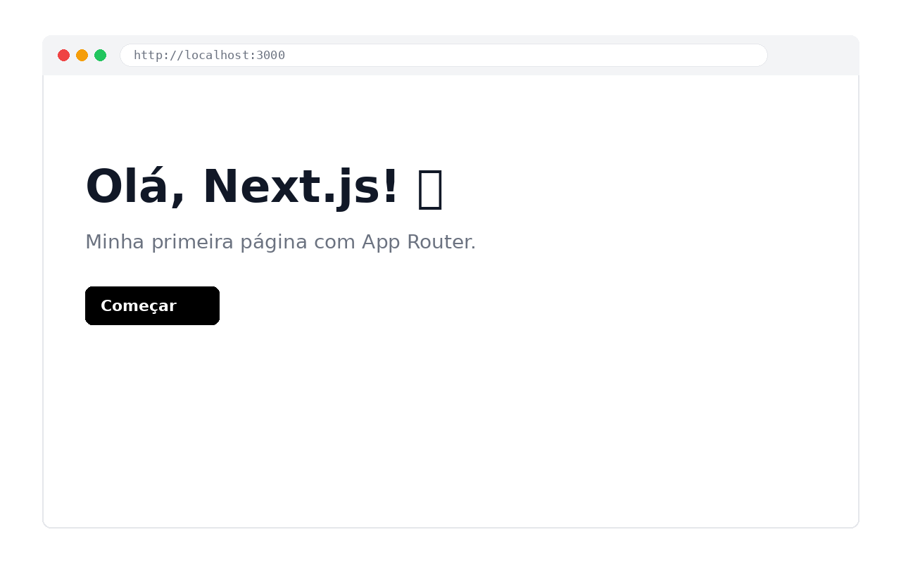

Sua primeira página
Chegou a hora de a Ana escrever o primeiro código dela. No Next.js, uma página é um arquivo app/page.jsx que exporta um componente React padrão. Nesta página você vai editar esse arquivo, entender as regras do JSX e ver a página aparecer no navegador.
- Que
app/page.jsxvira a rota/automaticamente - A anatomy de uma página:
export default function+returncom JSX - As regras do JSX: um elemento raiz, tags fechadas,
className,{ }para JavaScript - Que o componente de página não recebe props obrigatórias
A ideia: o page.jsx é o outdoor da esquina
Numa cidade, cada esquina tem um outdoor — aquele painel que anuncia uma loja. Você não precisa registrar o outdoor na prefeitura: só de você pendurar o painel numa esquina, as pessoas que passam ali já veem o anúncio. O page.jsx do Next.js funciona igual: só de você criar o arquivo dentro de app/, o Next.js já transforma ele numa rota pública. O arquivo app/page.jsx vira a esquina principal — a rota /. Se a Ana criar app/sobre/page.jsx, virou outra esquina: a rota /sobre. Não existe cadastro manual de rotas; o endereço nasce do caminho do arquivo.
Dentro do arquivo, a página é um componente React comum: uma função JavaScript que retorna JSX (aquele "HTML dentro do JavaScript"). A única regra de ouro do Next.js: essa função precisa ser o export default do arquivo — é assim que o Next encontra "qual componente é a página". Pense no export default como a placa de "ABERTO" na porta: sem ela, o Next.js não sabe que ali dentro tem uma página.
E o JSX tem regrinhas próprias, vindas do React: (1) o retorno precisa de um único elemento raiz — se quiser devolver dois títulos seguidos, envolva num <div> ou num fragmento <>...</>; (2) toda tag abre e fecha — <img> vira <img />; (3) atributos viram camelCase: class vira className, onclick vira onClick; (4) para colocar JavaScript no meio do HTML, use chaves { } — é a janelinha do JSX.
Editando a página inicial
Apague o conteúdo padrão que o create-next-app colocou e deixe o app/page.jsx assim:
export default function Home() {
return (
<main>
<h1>Olá, Next.js! 👋</h1>
<p>Minha primeira página com App Router.</p>
</main>
);
}
Salve o arquivo (Ctrl+S) e olhe o navegador: se o servidor de dev estiver rodando (você vai aprender no próximo capítulo), a página já mudou sozinha. Repare que usamos <main> como raiz única, as tags estão todas fechadas e o componente se chama Home por convenção — o nome não faz diferença para a rota, só o export default.
Missão: no código abaixo, troque o texto para mostrar o seu nome dentro de uma tag <h1> — por exemplo <h1>Olá, Ana!</h1> — e aperte ▶ Rodar.
export default function Home() {
return (
<main>
<h1>Olá, mundo!</h1>
</main>
);
}export default function Home() {
return (
<main>
<h1>Olá, Ana!</h1>
</main>
);
}
http://localhost:3000 servindo o app/page.jsx editado.Usando JavaScript dentro do JSX
Com as chaves { }, a Ana consegue colocar qualquer valor JavaScript dentro do HTML — variáveis, contas, condicionais:
export default function Home() {
const nome = "Ana";
const ano = 2025;
return (
<main>
<h1>Olá, {nome}!</h1>
<p>Estamos em {ano}. 2 + 2 = {2 + 2}.</p>
{ano >= 2025 ? <p>Ano novo!</p> : null}
</main>
);
}
| Regra do JSX | Errado | Certo |
|---|---|---|
| Um raiz só | <h1></h1><p></p> | <div>…</div> ou <>…</> |
| Tags fechadas | <img>, <br> | <img />, <br /> |
| Atributos | class=, onclick= | className=, onClick= |
| JS no HTML | escrever código solto | chaves: {variavel} |
| Comentários | // dentro do HTML | {/* comentário */} |
Quando dá errado
export default e o Next.js reclamou na hora de abrir a página:Error: Page "/" does not export a default component.
Add `export default` to the file to make it a valid page.
Dica do guia: toda página (page.jsx) precisa terminar com um componente
exportado como padrão: `export default function Home() { ... }`
SyntaxError: Adjacent JSX elements must be wrapped in an enclosing tag. 4 | return ( 5 | <h1>Título</h1> > 6 | <p>Subtítulo</p> ← erro aqui Dica do guia: envolva tudo num <div> (ou fragmento <>...</>): return (<> <h1>…</h1> <p>…</p> </>);
Exercícios
1. Qual arquivo vira a rota / no App Router?
2. Como se escreve o atributo de classe em JSX?
Exercício 1
Complete a abertura de uma página do Next.js: como deve começar a função que o page.jsx precisa exportar como padrão? Escreva só as duas primeiras palavras: